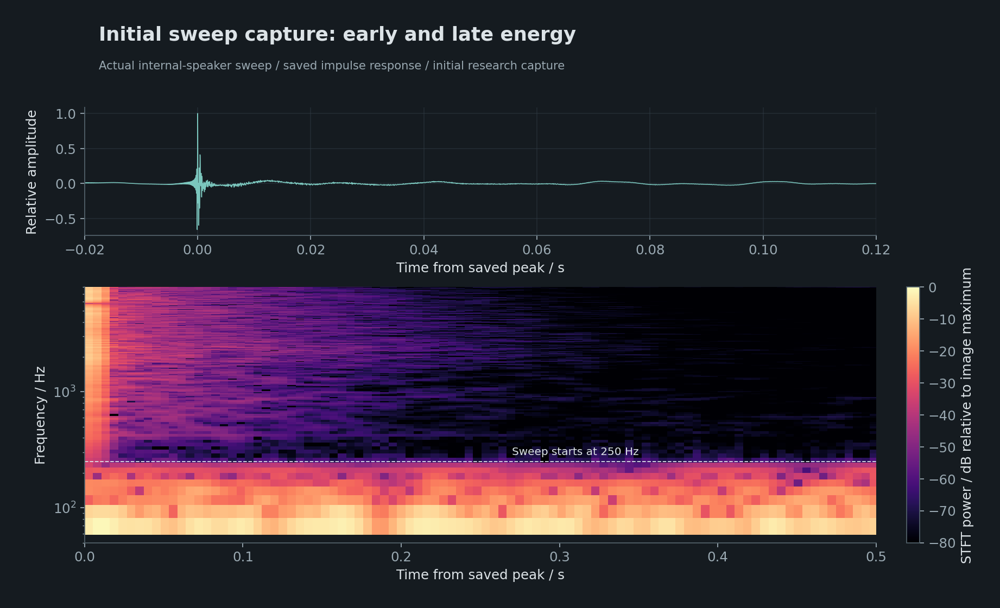
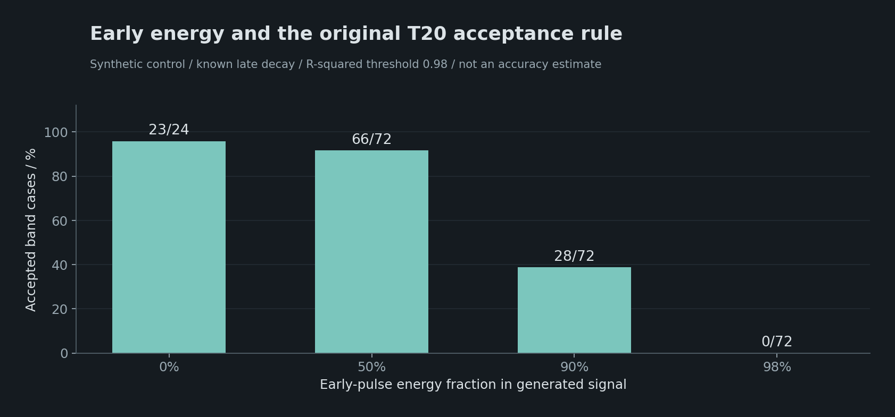
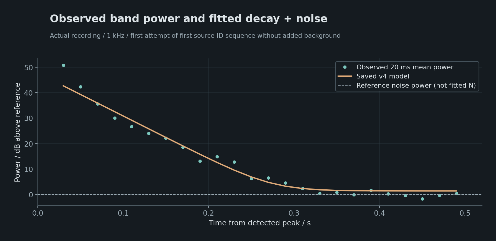
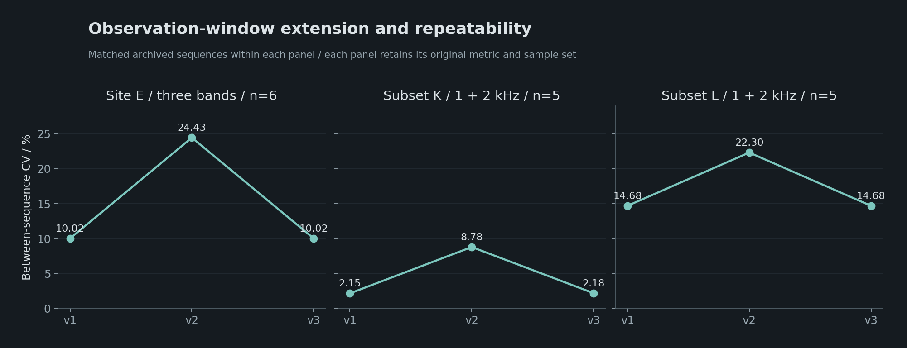
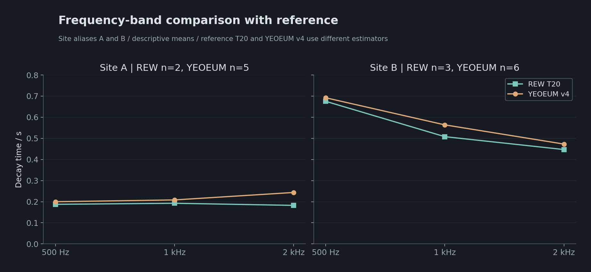
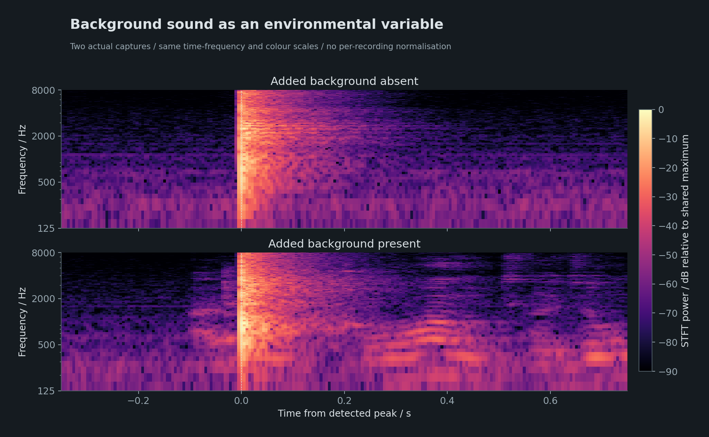
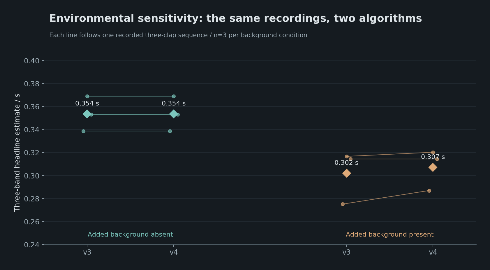
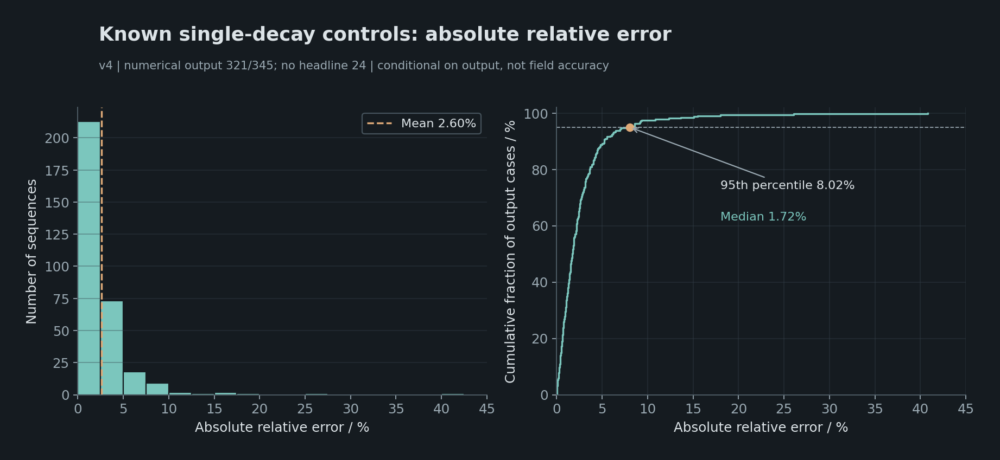
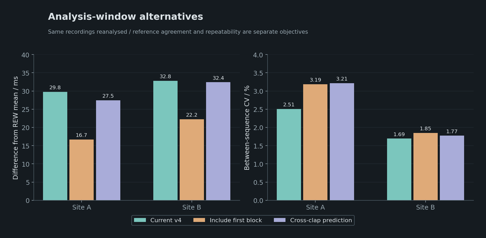

스마트폰과 세 번의 박수를 이용한 공간 감쇠 추정
YEOEUM의 설계 과정과 검증 결과
기술 연구 보고서 · 작성 강민구(Mingkoo) · 2026년 11월
대상 제품 YEOEUM 1.0.0 · 문서판 1.0
목차
초록
YEOEUM은 별도의 음향 장비 없이 스마트폰의 내장 마이크와 세 번의 박수로 공간의 중역 감쇠를 확인하는 도구다. 500 Hz·1 kHz·2 kHz에서 추정한 감쇠 시간을 하나의 대표값으로 요약하고, 대역별 결과와 측정 근거를 함께 기록한다. 본 보고서는 2026년 10월의 초기 기획부터 1.0.0 측정 방식 확정까지, 간단한 사용 절차 안에서 유효한 감쇠 정보를 얻기 위해 수행한 설계와 검증을 정리한다.
초기에는 내장 스피커를 이용한 자동 스윕 측정을 검토했다. 이후 실제 녹음에서 확인한 초기 에너지와 후기 감쇠의 차이, 배경소음, 분석 구간의 민감성을 바탕으로 박수 입력과 지수 전력 감쇠 모형을 선택했다. 각 박수의 감쇠를 따로 추정한 뒤 대역별 중앙값을 집계하고, 신호가 부족한 대역과 반복 근거를 구분하는 절차를 구성했다.
최종 방식은 두 실측 장소에서 각각 다섯 회와 여섯 회 반복했을 때 대표값의 측정 간 변동계수(CV) 2.51%와 1.69%를 보였다. 정답이 주어진 단일 감쇠 합성 검사에서는 345조건 중 321조건에서 대표값을 제공했고, 제공값의 평균 절대 상대오차는 2.60%였다. 실제 참조와의 대역별 차이, 배경소음에 따른 변동과 미산출 조건도 함께 확인했다. 이러한 결과를 바탕으로 스마트폰을 이용한 현장 예비 확인의 가능성과 적용 범위를 제시한다.
주요어: 스마트폰 측정, 공간음향, 잔향시간, 박수 가진, 감쇠 추정, 배경소음, 반복성
표기와 읽는 기준
| 표기 | 의미 |
|---|---|
| 감쇠 시간 T, 초(s) | 해당 대역의 감쇠 성분이 60 dB 감소하는 속도에 상당하는 추정 시간 |
| 측정 1회·시퀀스 | 세 번의 박수와 그 분석을 완료한 한 묶음. 박수별 관측은 그 안의 개별 입력 |
| 대표값 | 500 Hz·1 kHz·2 kHz 대역별 중앙값의 동일 비중 평균 |
| CV, % | 같은 조건에서 반복한 값의 상대적인 흩어짐. 작을수록 반복값이 가까움 |
| 참조 차이 | 별도 REW T20 결과와의 차이. 같은 원본·같은 계산식의 비교와는 구별 |
| 합성 오차 | 감쇠 시간을 미리 정해 만든 시험 신호에서 목표값과 추정값의 차이 |
장소는 A·B 등의 익명 기호로 표시한다. 그림의 점·선·막대가 뜻하는 대상과 표본 수는 범례·설명에 명시하고, 스펙트로그램은 시간·주파수·색상 눈금을 함께 읽는다. 본문의 ‘스마트폰’은 제품의 목표 사용 환경을, 특정 기종명은 실제 검증에 사용한 장치를 뜻한다.
1. 무엇을 하려고 했는가
1.1 출발점: 장비를 꺼내기 전에 공간을 확인할 수 있는가
여음의 출발점은 현장에서 들리는 잔향을 스마트폰만으로 확인할 수 있게 하는 것이었다. 별도의 스피커·측정 마이크·인터페이스·컴퓨터를 연결하거나 삼각대를 설치하지 않고, 손에 든 기기에서 측정을 시작해 결과를 읽는 절차를 목표로 했다. 사용자가 장비를 준비하는 부담을 줄이되, 공간마다 소리가 얼마나 오래 남는지 판단할 근거를 얻고자 했다.
처음부터 세 번의 박수를 전제로 기획한 것은 아니다. 초기 구상은 휴대전화가 알고 있는 시험음을 내장 스피커로 재생하고, 동시에 녹음한 뒤, 두 신호를 비교해 공간 응답을 얻는 자동 측정이었다. 박수는 자동 측정에서 유효한 신호를 확보하지 못할 때 검토할 보조 입력이었다. 짧은 조작으로 대표값 하나를 제공하고, 필요한 사람에게만 대역별 결과와 분석 근거를 보여주는 화면 구조도 이때 정했다.
개발은 먼저 측정 숫자보다 녹음 자체를 확인하는 단계에서 시작했다. 시험음이 의도대로 재생됐는지, 녹음이 중간에 끊기지 않았는지, 감쇠 구간이 보존됐는지, 저장한 응답을 같은 계산으로 재현할 수 있는지 조사했다. 이 단계에서 ‘계산한 파일이 올바르다’와 ‘그 파일에 유효한 공간 감쇠가 들어 있다’가 서로 다른 문제라는 점이 드러났다.
이후의 방향 전환은 조작을 더 복잡하게 만들기보다, 주어진 휴대전화 입력에서 얻을 수 있는 정보를 다시 정하는 과정이었다. 최종 입력은 스마트폰 내장 마이크와 세 번의 박수로 바뀌었지만, 외부 장비를 필수로 요구하지 않고 현장에서 대략적인 감쇠를 확인한다는 목표는 유지했다.
1.2 측정할 양의 정의
최종 제품은 세 대역 각각에서 지수 전력 모형의 60 dB 감쇠 상당 시간을 추정한다. 각 대역은 유효한 박수별 추정값의 중앙값이며, 대표값은 다음과 같다.
이 평균은 제품이 정한 중역 감쇠 요약량이다. 전체 가청 대역, 음성 명료도, 공간의 종합 음향 품질을 나타내는 지표는 아니다. 세 대역 중 하나라도 값이 없으면 이 대표값은 제공하지 않고, 확보한 대역 정보는 부분 결과로 보존한다.
또한 이 값은 Schroeder 에너지감쇠곡선의 −5∼−25 dB 회귀로 구하는 T20과 계산 정의가 다르다. 두 방법이 이상적인 단일 지수 감쇠에서는 같은 시간을 가리킬 수 있어도, 초기·후기 감쇠가 다른 실제 신호에서는 일치가 보장되지 않는다. 본문에서 RT60 추정은 현행 전력 모형을, T20은 해당 역적분·회귀 지표를 뜻한다. REW의 T20 정의.
1.3 세 번을 녹음하고 근거를 남긴다
박수의 크기와 스펙트럼은 일정하지 않다. 세 번의 관측은 그 차이를 확인하고 한 입력에 대한 의존을 줄이기 위한 구성이다. 녹음·분석 결과에는 원본, 선택한 사건 시점, 처리 버전, 대역별 값과 기여 박수, 미산출 사유를 연결한다. 실패한 시도의 원본도 분석 가능한 경우 보존한다.
공간 기록을 새로운 소리의 잔향 제작에 활용하는 연구도 함께 진행했다. 본 보고서는 그 입력이 되는 감쇠 추정과 검증에 집중하며, 합성으로 이어지는 활용은 5.3절에서 소개한다.
1.4 기획에서 최종 방식까지
| 단계 | 처음 확인하려던 질문 | 확인한 문제와 다음 선택 |
|---|---|---|
| 자동 스윕 캡처 | 휴대전화가 소리를 내고 스스로 응답을 기록할 수 있는가? | 기록·역산은 재현됐지만 강한 초기 성분과 약한 후기가 분석을 제한했다. |
| 박수와 T20 | 음원을 기기 밖으로 분리하면 유효한 감쇠를 얻을 수 있는가? | 일부 공간에서 후보를 얻었으나 입력 검출·필터·직선성·잡음 종료 조건에 민감했다. |
| 경고·참고값과 기준 비교 | 계산 가능한 진단과 제공할 만한 값을 어떻게 구분할 것인가? | 진단 보존은 개선됐지만 현장 21시퀀스에서 대표값이 하나도 나오지 않았다. |
| 전력 감쇠 모형 | 신호가 줄어드는 부분과 남아 있는 잡음을 함께 설명할 수 있는가? | 같은 원본에서 정보가 회복됐으나, 긴 관측창과 공동 추정은 반복성 문제를 드러냈다. |
| 조건부 확장과 사전 잡음 | 긴 감쇠를 놓치지 않으면서 변동 배경의 오인을 줄일 수 있는가? | 짧은 기본창·반복 근거·사전 잡음 분포를 결합한 현행 방식으로 정리했다. |
| 1.0.0 확정 | 추가 복잡성이 실제로 더 나은 결과를 만드는가? | 대역 가중·초기 구간·두 성분·교차 예측까지 비교한 뒤 v4와 3대역 동일 평균을 유지했다. |
각 단계에서 입력·분석량·실패 조건을 나눠 확인했고, 기존 가정이 맞지 않을 때 방법 자체를 바꿨다. 과거 결과는 당시의 정의와 버전으로 보존했다.
2. 어떤 문제를 고려했고 무엇을 선택했는가
2.1 내장 스피커 스윕에서 박수로
초기에는 입력 신호를 아는 지수 사인 스윕을 스마트폰 내장 스피커로 재생하고 내장 마이크로 녹음했다. 스윕은 낮은 주파수부터 높은 주파수까지 순서대로 지나가는 시험음이다. 입력 파형을 알고 있으므로 녹음과의 관계를 역산해 응답을 얻을 수 있다는 장점이 있었다. 여기서 응답에는 공간뿐 아니라 음원·수음 장치와 처리 경로의 영향도 포함된다. 수치 역산과 파일 내보내기의 재현성은 확인했지만, 수학적으로 역산이 맞는 것과 공간의 유효한 감쇠가 확보되는 것은 별개였다.
실제 녹음에는 매우 강한 초기 성분과 약한 후기 성분이 나타났고, 오디오 모드에 따라 녹음 레벨과 시간적 포락선도 달랐다. 레벨 사전 점검으로 주 스윕의 큰 입력을 피한 사례에서도 유효한 감쇠 구간은 확보되지 않았다. 넓은 대역의 긴 꼬리처럼 보였던 부분이 실제 가진 범위 밖의 저주파 성분에 지배된 사례도 있었다.

이에 음원과 수음기를 물리적으로 분리할 수 있는 박수를 주 입력으로 선택했다. 이는 휴대전화 스윕 방식이 원리상 불가능하다는 결론이 아니다. 검토한 구성에서 최종 제품에 필요한 근거를 충분히 얻지 못했다는 선택이다. 박수 역시 파형·지향성·대역 에너지가 알려진 시험 신호는 아니므로, 녹음을 완전한 공간 임펄스 응답으로 간주하지 않는다.
휴대전화와 박수를 이용한 중역 잔향 측정은 선행 연구에서도 다뤄졌다. Martin 등의 연구는 여러 박수와 내장 마이크를 사용하고 유효 범위와 기준 비교를 검토했다. 본 연구는 이 접근을 참고했지만 박수 횟수, 필터, 구간 선택과 추정식이 달라 해당 연구의 성능을 승계하지 않는다. Martin·Duée·Blais, ICSV26, 2019.
2.2 입력 검출과 감쇠 추정을 분리한다
저장 자료에서 두 가지 검출 문제가 재현됐다. 준비 구간의 단발 소리가 이후 문턱을 지나치게 높였고, 작은 선행음 때문에 큰 박수가 검증창 밖이나 끝에 놓여 뒤의 작은 사건을 선택하기도 했다. 단일 최대 표본 대신 10 ms 블록 피크의 95백분위를 준비 기준에 사용하고, 후보 확인 구간을 120 ms로 늘리는 변경은 해당 사례를 대상으로 검증한 뒤 반영했다.
검출 완료를 감쇠 측정 성공으로 세지는 않는다. 초기 현장 21시퀀스에서는 63박수 중 62개가 검출·저장됐어도 당시 대표값은 0/21이었다. 검출을 수정해도 감쇠 분석과 집계의 병목은 남았다.
입력의 절댓값이 Float32 기준 1을 넘는 경우도 별도로 조사했다. 해당 표본은 원본에 보존됐으며, 그 존재만으로 물리적 마이크 포화와 후기 감쇠 손상을 확정할 수 없었다. 피크 주변만 바꾸는 반사실 실험은 일부 후기 계산의 민감도가 작음을 보여줬지만, 상류 비선형성을 복원한 실험은 아니다. 이 연구는 입력 경고와 분석 가능한 구간을 구분하는 근거로 사용했고, 무조건적인 경고 해제 근거로 사용하지 않았다.
2.3 T20의 종료점과 적격성 문제
초기 분석은 대역별 제곱 신호를 역적분한 에너지감쇠곡선에 T20 회귀를 적용했다. 다음 문제가 확인됐다.
- 낮은 차수의 초기 필터에서 대역 외 저주파 성분이 후기 곡선을 지배했다. 이후 FFT 대역 투영으로 바꿔 대역 밖 성분의 영향을 줄였다. 이 필터의 특성은 자체 대조 실험으로 확인했다.
- 강한 초기 감소와 느린 후기가 섞이면 하나의 회귀가 부적격해질 수 있었다. R²를 완화하면 통과는 늘어도 복수 기울기나 소스 자체의 감쇠를 더 받아들였다.
- 잡음 이상으로 신호가 처음 조용해진 지점에서 적분을 끝내면, 뒤에 다시 에너지가 생기는 실제 녹음에 민감했다.
- 세 대역이 같은 박수에서 모두 적격이고 반복 편차도 작아야 한다는 집계는, 개별 대역에 정보가 남아 있어도 대표값을 막았다.
T20 계산을 직관적으로 설명하면, 어떤 시점 뒤에 남아 있는 에너지를 모두 합쳐 곡선을 만든 뒤, 그 곡선이 20 dB 줄어드는 구간의 기울기를 읽는 것이다. 그 속도가 계속된다고 가정해 60 dB까지 걸리는 시간으로 환산한다. 예를 들어 20 dB 감소에 0.2초가 걸리는 직선이라면 환산 시간은 0.6초다. 이 예시는 정의를 설명하기 위한 계산이며 실측 결과가 아니다.
문제는 ‘뒤에 남은 에너지’에 잡음도 포함된다는 점이다. 적분을 너무 늦게 끝내면 잡음이 누적되고, 너무 일찍 끝내면 실제 감쇠를 잘라낸다. 초기에 큰 에너지가 몰려 있으면 회귀 구간이 느린 후기보다 빠른 초기 감소를 더 많이 반영할 수도 있다.

한 사례에서는 원본과 검출 피크를 고정하고 분석 원점·10 ms 격자만 0.5 ms 옮겼을 때 종료 설정이 약 80 ms 달라졌고, 20 dB 통과 기간을 세 배 한 참고 진단이 0.7617초에서 0.6522초로 변했다. 이 숫자는 회귀 T20이 아니다. 이동평균으로 격자 민감도를 줄일 수 있었지만 그것만으로 현장 대표값 제공은 회복되지 않았다.
R²·잡음 문턱 완화, 짧은 감쇠폭, 잡음 차감, 단순 꼬리 보상과 반복 집계 변경도 비교했다. 일부는 참고값 제공에 활용됐지만 현장 21시퀀스의 병목을 해결하지 못했다. 따라서 현재 방식은 기존 T20의 문턱을 낮춘 것이 아니라, 별도의 전력 감쇠 모형으로 전환한 결과다. 역적분의 잡음과 필터 영향, 지수 감쇠와 잡음의 모형 적합이라는 일반적 접근은 REW 기술 문서에도 설명되어 있다. 여음은 REW의 STFT·구간 선택·최적화 구현과 동일하지 않다. REW RT60 Decay 기술 설명.
2.4 최종 대역 전력 모형
유효한 원본을 먼저 FFT 대역 필터링한 뒤 검출 피크를 기준으로 20 ms 평균 제곱 전력을 구한다. 중심 주파수에서 ±0.35옥타브는 평탄하게, ±0.5옥타브까지는 코사인으로 줄이는 대역 창을 사용한다. 한정된 길이의 녹음을 주파수별로 나누는 처리이므로, 필터 자체가 시간축의 에너지 분포에도 영향을 줄 수 있다.
대역별 전력은 다음 모형으로 적합한다.
이 식은 시간이 지나며 줄어드는 성분 + 계속 남아 있는 배경 성분으로 녹음을 설명한다. A는 감쇠 성분의 크기, N은 잡음 바닥, T는 감쇠 전력이 이 되는 데 해당하는 시간이다. 잡음이 포함된 전체 전력 P가 T초 뒤 반드시 60 dB 작아진다는 뜻은 아니다. 세 매개변수가 양수가 되도록 로그 좌표에서 계산하고, 서로 다른 시작값에서 반복해 안정적인 적합을 찾는다. 관측값과 모형값의 dB 차이를 기준으로 하되, 일부 튀는 관측의 영향을 줄이는 강건 손실을 사용한다.
소리가 커져도 감소 속도가 같다면 A만 커지고 T는 유지되는 것이 이 모형의 의도다. 반대로 후기 곡선이 평평해지는 부분을 모두 긴 잔향으로 읽지 않고, 일부를 N으로 설명한다. 따라서 관측 곡선 전체가 dB 축에서 완벽한 직선일 필요는 없다. 강건 손실은 일부 튀는 관측점 하나가 전체 감소 속도를 지나치게 바꾸지 않도록 그 영향력을 줄이는 계산이다.

기본 적합점의 중심시각은 피크 뒤 30∼490 ms다. 실제 평균에 사용되는 구간은 20∼500 ms이며 첫 0∼20 ms 블록은 제외한다. 따라서 ‘30 ms를 버리고 그 시간을 결과에 더한다’는 계산이 아니다. 순수 지수의 구간 평균은 기울기를 유지하므로, 20 ms 평균 자체에서 보편적인 20∼30 ms 가산 편향이 생기지는 않는다. 실제 구간 민감성은 초기 성분·반사·잡음·복수 기울기가 함께 있을 때 검토해야 한다.
2.5 적합 가능성과 값 제공 자격
최적화가 숫자를 반환해도 바로 사용하지 않는다. 현행 주요 조건은 다음과 같다.
| 확인 항목 | 현행 조건과 의미 |
|---|---|
| 감쇠 모형의 근거 | 상수 잡음 모형 대비 구현상 ΔBIC 진단 ≥10 |
| 사건의 크기 | 박수 공격 구간 전력의 사전 잡음 대비 여유 ≥6 dB |
| 모형의 신호 지지 | 모형 감쇠 성분이 모형 잡음 이상인 구간 ≥60 ms, 그 구간의 모형 감쇠폭 ≥6 dB |
| 적합 잔차 | 신호 지지 구간의 상한 절삭 잔차 RMSE ≤4 dB |
| 수치 상태 | 수렴, 유한한 값, 허용 매개변수 경계에 붙지 않음 |
| 필터 잔류 보호 | 30∼90 ms 전력이 공격 구간 대비 −35 dB 미만이면 제외 |
| 사건 후 신호 | 30∼90 ms 전력이 박수 전 잡음보다 ≥3 dB 높음 |
이 조건들이 묻는 질문은 세 가지다. 잡음만 있는 경우보다 감쇠 모형이 실제로 더 설명력이 있는가, 박수 뒤에 충분한 길이의 신호가 남아 있는가, 그 신호를 한 감소 속도로 요약할 때 오차가 지나치게 크지 않은가다. ‘곡선을 그릴 수 있음’과 ‘그 곡선에서 시간을 읽어도 됨’을 구분하는 절차다.
ΔBIC는 가중 잔차 제곱합과 표본 수로 산출하는 구현상의 모형 비교 진단이다. 시간 상관·강건 적합을 포함한 실제 입력에서 확률적 오차율이나 통상적인 BIC 해석이 그대로 성립한다고 검증한 것은 아니다. 신호 지지와 감쇠폭도 적합 모형에서 계산한 양으로, 독립적으로 관측한 무잡음 감쇠 구간은 아니다. 표의 상수는 개발·대조 실험에 근거한 공학적 선택이다.
2.6 긴 감쇠: 구간을 늘리는 것의 이득과 대가
0.46초 관측에 최소 6 dB 감소를 요구하면 모형상 약 4.6초보다 긴 감쇠는 승인하기 어렵다. 초기 고정창에서 합성 5초의 일부가 짧게 추정된 채 남고 6초 대표값이 나오지 않은 원인 중 하나였다. 최적화 탐색 상한 8초와 실제 제공 가능한 범위는 다르다.
v2에서는 긴 후보를 1.5초까지 적합해 합성 6초를 복원했다. 그러나 현장 장소 E 묶음의 동일 여섯 대표값 CV가 10.02%에서 24.43%로 악화했고, 잔향 없이 서서히 줄어드는 배경과 직접 충격만 있는 대조도 감쇠로 해석했다. 한 측정의 대표값은 1.861초에서 3.594초로 바뀌었다. 긴 구간이 언제나 더 정확한 관측은 아니었다.

관측창을 늘린다는 것은 같은 소리를 더 오래 ‘확인’하는 동시에, 다른 배경 변화가 들어올 기회도 늘리는 일이다. 충분한 신호가 있는데도 짧게 잘라 보는 문제와, 뒤에 남은 소리를 모두 잔향으로 믿는 문제를 함께 다뤄야 했다.
최종 방식이 계승한 v3의 확장은 기본 적합이 실패하거나 초기 진단이 관측 길이에 비해 긴 경우에 한정한다. 현재 분기 기준은 0.46초에서 9 dB 감소를 담는 약 3.07초다. 확장 전에는 200∼400 ms 전력도 사전 잡음보다 3 dB 이상 높아야 한다. 후기 기준 전력이 사전 잡음의 네 배보다 높으면 1.5초, 그렇지 않으면 2초까지 사용한다. 모두 기존 박수 뒤 3초 녹음 안의 분석이며 추가 6초 녹음이 아니다.
확장 경로의 값은 다른 박수의 같은 대역 추정과 큰값/작은값 비가 1.5 이내일 때만 집계에 기여한다. 짧은 경로의 단일 박수 참고 정책은 유지한다. 이 구조로 앞선 현장 회귀와 감소 배경 대조를 제한하면서 긴 합성 신호에 대한 대응을 남겼다.
2.7 박수 전 잡음 분포를 사용한 v4
v4는 기존 적격성을 유지하면서 잡음 바닥의 선택을 제한적으로 수정한다. 박수 전 20 ms 전력 블록이 여덟 개 이상이면 10·90백분위 범위를 구한다. 기존 짧은 구간 적합에 값이 있을 때 이 범위를 이용해 N의 허용 범위를 제한한 후보를 다시 계산한다. 후보가 기존 적격 조건을 만족하고 기존 T와의 큰값/작은값 비가 1.25 이내일 때 채택한다.
기존 미산출을 이 단계에서 새로 복구하거나 긴 경로를 교체하지 않는다. 배경 전력을 단순히 빼거나 RT에서 일정 시간을 빼는 보정도 아니다. 사전 잡음 분포가 이후 잡음을 완전히 설명한다는 보장은 없으며, 그 불일치가 남는 한계다.
2.8 세 박수의 대역별 중앙값과 동일 평균
세 박수에 공통 T를 직접 적합하는 방식도 시험했다. 당시 현장 자료의 수치 제공은 늘었지만 특정 박수의 늦은 에너지와 배경 변화가 공통 기울기를 좌우했다. 반복 파워의 정규화·평균·중앙값, 박수별 추정 후 중앙값을 대조한 뒤 마지막 구성을 선택했다.
각 대역에 기여하는 박수 집합은 달라도 된다. 한 대역에서 실패한 박수가 다른 대역의 유효 정보를 자동으로 없애지 않는다. 단일 박수 근거와 반복 근거는 구분하고, 높은 박수 간 CV는 주의 정보로 남긴다. CV만으로 값을 제거하거나 대역 비중을 바꾸지 않는다. 대역별 CV 20% 초과는 주의 사유이며 일괄 미제공 조건이 아니다.
본문의 CV는 이며, s는 분모가 n−1인 표본 표준편차다. 대역 내부 CV의 표본은 기여 박수별 시간이고, 측정 간 CV의 표본은 완료된 시퀀스별 대표값이다. 기여가 하나이면 그 대역의 CV를 계산하지 않는다.
3. 어디에 한계가 있는가
3.1 입력과 측정량의 한계
박수에는 미지의 시간 파형과 지향성이 있고, 내장 마이크의 응답과 기기 처리가 수음에 관여한다. 손에 든 자세, 몸과의 거리, 휴대전화 방향, 음원·수신 위치도 바뀔 수 있다. 단일 위치의 세 박수로 공간 전체의 감쇠 분포를 대표한다고 가정하지 않는다.
단일 지수 모형은 초기·후기 감소 속도가 다른 신호를 압축한다. 짧은 관측창과 긴 관측창이 다른 값을 낸다고 해서 어느 한쪽을 자동으로 참값으로 고를 수 없다. 높은 적합도 역시 그 감쇠가 공간에서 발생했다는 증거는 아니다. 소스 자체의 지수 감쇠도 수학적으로 같은 모형을 만족할 수 있다.
3.2 참조 측정도 조건을 갖는다
과거 UMIK-1과 스피커를 사용한 장소 F·G 비교, 같은 REW IR을 두 분석기에 넣은 비교, 같은 박수를 iPhone과 UMIK→AAC로 동시에 기록한 비교를 나눠 검토했다. 같은 IR에서 계산 차이가 작아져도 실측 입력 차이는 남았으며, 같은 박수가 외부 마이크에서도 짧게 분석된 사례가 있어 차이를 iPhone 처리 하나에 귀속하지 못했다. AAC 동시 녹음에는 압축 경로라는 제한도 있었다.
최근 REW 비교는 MacBook Air 스피커와 원격 iPhone 마이크를 사용했다. 이 경로는 교정된 측정 마이크 기반의 독립 기준과 다르다. 같은 휴대전화를 사용해도 원격 입력과 앱의 녹음 세션이 같은 마이크 배열·처리를 사용한다고 확인하지 않았다. 명목 대역폭을 맞춰도 필터와 추정량이 다르므로 본문의 차이는 ‘해당 REW T20 대비 관측 차이’다.
3.3 검증 자료의 범위
같은 녹음을 여러 방법으로 재분석한 결과와 새로 측정한 결과는 구분했다. 합성 신호의 조건·난수 시드는 실제 공간의 측정 횟수로 합산하지 않았으며, 같은 스마트폰 기록을 공유하는 보조 참조도 독립 표본으로 중복 계산하지 않았다. 수치 제공 비율은 각 평가 집합 안에서 계산했고, 실제 사용 환경 전체의 성공률로 일반화하지 않는다.
여러 후보를 같은 보관 자료에서 비교했으므로 자료 분할과 규칙 고정만으로 모든 탐색 편향이 사라지지는 않는다. 과거에 본 평가 자료를 완전한 미사용 맹검으로 부르지 않는다. 작은 반복 수에서 얻은 CV는 정밀한 모집단 추정이나 신뢰구간도 아니다.
3.4 평균이 숨기는 대역 차이
대표값이 가까워도 한 대역의 과소 추정과 다른 대역의 과대 추정이 상쇄될 수 있다. 대표값 CV가 작아도 각 대역의 변동이 반대 방향이면 안정적으로 보일 수 있다. 따라서 실제 참조 비교는 대역별 값과 대표값을 함께 보며, 박수 간 편차와 완료된 측정 간 편차도 구분한다.
4. 그럼에도 무엇을 확인했는가
4.1 최종 엔진의 실제 기기 비교
실제 기기 검증은 iPhone 16 Pro에서 수행했다. 장소 A의 여음 5시퀀스와 장소 B의 6시퀀스는 최종 전력 모형(v4)을 사용한 기록이다. 각 시퀀스는 세 번의 박수로 구성된다. 저장 결과를 같은 계산으로 재현한 뒤, 같은 장소에서 별도로 얻은 REW T20과 대조했다. 장소 기호는 이 문서 안에서 일관되게 사용한다.
| 장소 | REW 횟수 | 여음 횟수 | REW 3대역 평균 s | 여음 평균 s | 차이 s | 차이 % | 여음 측정 간 CV |
|---|---|---|---|---|---|---|---|
| A | 2 | 5 | 0.18750 | 0.21725 | +0.02975 | +15.87% | 2.51% |
| B | 3 | 6 | 0.54311 | 0.57593 | +0.03282 | +6.04% | 1.69% |
이 표가 묻는 것은 두 가지다. 여음이 같은 조건에서 얼마나 비슷하게 반복되는가, 그리고 그 값이 참조와 얼마나 다른가다. 장소 A는 잘 반복되지만 참조 대비 차이가 더 크고, 장소 B는 반복성과 참조 차이가 모두 상대적으로 작다. 작은 CV와 작은 참조 차이는 같은 성과가 아니다.
대표값 안의 대역 구성을 함께 보면 결과를 더 정확하게 읽을 수 있다.
| 대역 | 장소 A REW / 여음 s | 장소 A 차이 % | 장소 B REW / 여음 s | 장소 B 차이 % |
|---|---|---|---|---|
| 500 Hz | 0.18750 / 0.19990 | +6.61% | 0.67500 / 0.69175 | +2.48% |
| 1 kHz | 0.19250 / 0.20828 | +8.20% | 0.50767 / 0.56347 | +10.99% |
| 2 kHz | 0.18250 / 0.24358 | +33.47% | 0.44667 / 0.47258 | +5.80% |

대표값의 차이를 시간으로 보면 장소 A는 약 30 ms, 장소 B는 약 33 ms다. 상대 차이는 각각 15.87%와 6.04%로, 감쇠 시간이 짧은 조건에서는 같은 정도의 시간 차이도 더 큰 비율이 된다. 따라서 시간 차이와 상대 차이를 함께 보고, 두 값의 차이를 특정 기기의 보편적인 오차율로 읽지 않는다.
장소 A에서는 특히 2 kHz 차이가 크고, 장소 B에서는 500 Hz보다 1 kHz 차이가 크다. 특정 대역을 일괄 제외하거나 대표값 하나에 고정 보정을 적용하면 이 차이를 설명할 수 없다. 약 +0.03초라는 대표값 차이가 두 장소에서 관찰돼도 보편적인 가산 편향으로 판단하지 않는다.
참조 측정에는 MacBook Air 스피커와 원격 iPhone 마이크를 사용했다. 앱과 참조의 가진·수음 경로·필터·추정량은 완전히 같지 않다. 장소 A의 참조 적합 일부가 약했고, 장소 B의 500 Hz REW 반복 CV도 12.47%였다. 따라서 표는 교정된 절대 참값에 대한 확정 오차가 아니라 해당 참조에 대한 관측 차이다. 연결 조건을 바꾼 추가 비교와 미채택 참조는 부록 A에 남긴다.
4.2 반복성과 배경소음 환경 변인
별도 장소 C의 두 기록은 약 31분 간격으로 1.070초와 1.102초, 평균 1.086초·CV 2.14%였다. 장소 D는 7기록 중 6개 대표값, 평균 0.699초·CV 14.33%로 더 넓게 퍼졌다. 후자는 500 Hz 근거 부족과 일부 높은 박수 간 편차를 포함한다. 위치·방향 통제가 확인되지 않아 엄밀한 반복정밀도로 일반화하지 않는다.
배경소음의 영향은 같은 위치에서 재생음을 추가하거나 멈추는 방식으로 환경 변인을 조정해 별도로 조사했다. 추가 배경소음이 있는 조건과 없는 조건에서 각각 세 시퀀스를 녹음했다. 여기서 ‘없음’은 원래 주변 소음까지 없앤 무소음 상태가 아니라, 실험자가 추가한 재생음을 제거한 조건이다. 사용한 음원은 정상 백색잡음처럼 교정된 시험 잡음이 아니며, 일정한 대역별 소음 수준을 보장하지 않는다.

이 실험에서는 공간 자체를 바꾸지 않고 수음 환경을 바꿨을 때 추정치가 얼마나 이동하는지 본다. v4 보관 원본 재분석에서 추가 소음 조건의 CV는 v3의 7.72%에서 5.78%로 줄고, 추가 소음이 없는 조건은 약 4.29%로 유지됐다. 두 조건 평균의 차이는 −14.57%에서 −13.13%로 줄었지만 남아 있었다.

이를 소음에 의한 영향이 제거됐다는 결과로 해석하지 않는다. 같은 공간에서도 배경과 감쇠를 분리하기 어려운 조건이 있고, 사전 잡음 분포를 사용한 v4는 그 영향 중 일부를 줄였다는 결과다. 동일한 디지털 녹음에 보관 배경음을 더한 별도 대조도 수행했지만, 이는 실제 공간에서 재생음을 켜고 끈 실험과 다른 검사다. 둘을 같은 표본으로 합치지 않는다.
가장 마지막 검토의 실녹음 보관 집합에서는 대표값이 65/69였다. 이 분모에는 과거 재분석과 연구용 묶음도 포함되므로, 새 기기 실험 69회나 출시 후 성공률 94.2%를 뜻하지 않는다.
4.3 합성 신호에서의 수치 회복과 실패
여기서 합성 신호는 감쇠 시간을 미리 정해 만든 시험용 녹음이다. 정답을 알 수 있어 계산이 시간을 얼마나 잘 회복하는지 확인할 수 있지만, 실제 박수·기기·공간의 모든 특성을 재현하지는 않는다. 최종 v4를 기존 단일 감쇠 합성 자료에 적용한 결과다. 각 조건은 세 입력으로 구성하며, 시작점을 알려준 추정기 검사로서 검출·기기 경로를 포함하지 않는다. 평균 절대 상대오차는 대표값이 있는 집합 S에서 로 계산한다. 각 합성 조건의 세 대역 목표가 같으므로 해당 T를 대표값의 목표로 사용한다. 개발·회귀 집합의 세부 생성 조건과 시드는 원자료에 보존한다.
| 합성 자료 | 대표값 제공/전체 | 평균 절대 상대오차 | 오차 중앙값 | 오차 95백분위 |
|---|---|---|---|---|
| 개발용 단일 감쇠 | 135/135 | 2.03% | 1.60% | 5.33% |
| 별도 회귀 단일 감쇠 | 186/210 | 3.02% | 1.87% | 9.05% |
| 위 두 집합 전체 | 321/345 | 2.60% | 1.72% | 8.02% |
| 6초 조건 묶음¹ | 64/66 | 1.99% | 1.53% | 4.47% |
평균·중앙값·95백분위는 대표값이 제공된 조건에서 계산했다. 95백분위는 오차 분포의 상위 경계를 살펴보는 요약량이며 최대값이나 새 조건의 보장 한계는 아니다. 전체 345조건 중 24조건은 대표값이 없어 오차 요약에 포함하지 않았다. 전체 범위와 큰 오차 사례는 부록 A.7에 정리했다.
¹ 6초 묶음에는 전체 단일 감쇠 집합과 중복되는 조건이 있어 독립 표본으로 더하지 않는다.

평균 절대 상대오차 2.60%는 ‘모든 결과가 2.60% 이내’라는 뜻이 아니다. 오차가 작은 조건이 많아도 일부 큰 오차가 함께 존재할 수 있고, 숫자가 없는 조건은 평균 계산 밖에 있다. 따라서 본문에서는 평균·중앙값·95백분위와 분포를 함께 보고, 세부 범위와 미산출 개수는 부록까지 연결해 확인할 수 있게 했다.
합성 6초의 제공은 짧은 창의 구조적 한계를 보완했다는 근거다. 그러나 모형과 비슷한 신호에서의 회복이므로 실제 긴 공간에서의 6초 정확도 보장은 아니다. 또한 평균이 작아도 낮은 신호 대 잡음비(SNR)·짧은 신호 지지·단일 박수 근거 등에서 큰 오차가 남는다.
v3에서 마련한 잡음·충격·감소 배경 대조 63시퀀스는 v4에서도 대표값을 만들지 않았다. v4가 기존 미산출을 복구하지 않도록 설계됐다는 점에서, 이 결과를 새로운 오탐 성능 향상으로 세지는 않는다. 실제 환경 모든 오입력의 오측정률을 측정한 실험도 아니다.
4.4 채택하지 않은 후보가 보여준 것
1.0.0 확정 전의 비교는 최종 엔진을 설명하는 근거이므로 함께 남긴다. 전체 연구와 세부 변형은 부록 A에 정리했다.
| 후보 | 관찰한 이득 | 최종 채택하지 않은 이유 |
|---|---|---|
| 500 Hz 제외 | 일부 반복성·제공률 개선 | 측정 대상과 참조 평균이 바뀜. 장소 F·G 보관 비교에서 차이가 오히려 커짐 |
| 불안정 대역 20%, 나머지 40% | 값 이동 제한·일부 합성 오차 감소 | CV 기반으로 정확한 결과도 제외. 실제·과거 제공 54/58→45/58, 변경 사례의 참조 개선 미검증 |
| 모형 진단·원본 근거·반복 근거 조합 | 과도한 제외 감소, 일부 잡음 민감도·반복성 개선 | 모형의 자기평가 한계, 별도 평가·실제 변경 사례의 정확도 이득 부족 |
| 심각도별 가변 비중 | 일부 환경 CV·잡음 변동 감소 | 고정 비중보다 정확도 이득 없음, 기존값 이동 증가 |
| 변동 잡음+세 박수 공동 추정 | 배경소음 조건 간 차이와 잡음 추가 민감도 감소 | 일부 동일 조건 반복성과 기존 현장 자료 결과 악화 |
| 5·10 ms 시간 해상도 | 초기 구조를 더 세밀하게 관찰 | 일괄 적용의 정확도 개선 미확인. 블록 크기와 시작 구간 효과를 분리해야 함 |
| 초기 0∼20 ms 전체·일부 재사용 | 일부 합성·참조 차이 감소 | 다른 대역·공간 반복성 악화, 공격 구간 경고 재유입 |
| 두 감쇠 성분 | 이상적 두 성분 복원 | 기존 자료에서 불필요한 성분 선택·오차 증가, 구간 변경의 이득과 혼동 불가 |
| 다른 두 박수로 남은 박수 예측 | 일부 부작용을 피하는 선택 가능 | 새 두 공간에서 참조 차이 개선은 작고 반복성 악화. 세 번의 분할 검사 모두 개선을 요구하면 기존값 유지 |
마지막 교차 예측은 참조값이나 장소명을 선택 입력으로 사용하지 않았다. 세 박수 중 하나를 검사 대상으로 남기고, 나머지 두 박수에서 얻은 후보 T로 그 박수의 뒤쪽 전력을 예측했다. 검사 대상을 바꿔 세 번 반복한 뒤, 평균 예측 오차가 5% 이상 줄고 세 번 중 두 번 이상 개선할 때만 초기 구간을 사용했다. 자기 신호에 잘 맞는 후보가 다른 박수에도 설명력을 갖는지 확인하려는 절차다. 그럼에도 결과는 다음과 같았다.
| 방법 | 장소 A REW 차이 ms | 장소 A CV % | 장소 B REW 차이 ms | 장소 B CV % |
|---|---|---|---|---|
| 현행 v4 | +29.8 | 2.51 | +32.8 | 1.69 |
| 초기 구간 항상 포함 | +16.7 | 3.19 | +22.2 | 1.85 |
| 세 박수 교차 예측 | +27.5 | 3.21 | +32.4 | 1.77 |

현행이 모든 지표에서 최선이라는 결론은 아니다. 초기 정보를 살려 차이를 줄일 여지는 확인했지만, 검토한 선택 규칙이 그 이득을 반복성·제공률과 함께 확보하지 못했다. 이 결과에 따라 이번 구간 선택 연구를 종료하고 현행 v4·대역별 중앙값·3대역 동일 평균을 1.0.0 기준으로 확정했다.
5. 어떻게 활용하는 것이 적절한가
5.1 현장 예비 확인
YEOEUM은 외부 장비 없이 중역 감쇠의 대략적인 길이와 대역별 차이를 확인하는 용도로 사용한다. 반복 비교에서는 가능한 한 휴대전화 위치·방향, 박수 위치와 주변 조건을 유지하고 대표값과 대역값·기여 근거를 함께 본다. 같은 조건의 반복성은 비교의 유용성을 높이지만 절대 정확도를 대신하지 않는다.
규격 적합 판정, 시공 검수와 정밀 음향 설계처럼 더 강한 결론에는 목적에 맞는 기준 측정과 다수 위치의 관측이 필요하다. 숫자가 없는 대역을 0초로 읽거나, 빠진 대역을 다른 대역 평균으로 채워 기존 대표값처럼 비교하지 않는다.
5.2 원본과 처리 버전을 연결한 기록
기록의 단위는 최종 숫자만이 아니라 원본·측정 조건·선택 시점·분석 버전·대역별 결과·실패 이유다. 과거 T20, 초기 전력 모형, 최종 v4 결과를 같은 정의로 소급 변경하지 않는다. 동일 원본에 새 분석을 적용하면 원래 결과와 구분해 저장해야 한다.
이 구조는 현재 판단이 바뀌더라도 어떤 관측에서 어떤 결론을 얻었는지 검토할 수 있게 한다. 초기 현장 0/21과 이후 같은 원본의 18/21 재분석도 이 구분 덕분에 함께 해석할 수 있다.
5.3 측정한 소멸 특성을 새로운 소리에 활용하기
대역별 감쇠 시간은 공간을 비교하는 수치인 동시에, 새로운 잔향을 만드는 조건으로 사용할 수 있다. 낮은 대역이 오래 남고 높은 대역이 먼저 사라지는 특성을 얻었다면, 새로운 음성이나 악기에도 그 소멸 속도의 관계를 적용하는 방식이다.
여음 트레이스(YEOEUM TRACE)는 이 목적을 위해 연구한 측정 기반 잔향 합성 엔진이다. 여음에서 얻은 대역별 감쇠 시간을 입력받아 잔향 응답을 만들고, 이를 BLOOM 같은 리버브 도구에서 새로운 소리에 적용하는 경로를 구성한다. 여기서 BLOOM은 소리에 잔향을 부여하는 오디오 플러그인이다.
이 활용에는 대표값 하나보다 평균내기 전 대역별 정보가 필요하다. 대역 사이의 시간 차이를 유지해야 서로 다른 소멸 특성을 합성에 전달할 수 있기 때문이다. 입력 측정의 근거와 유효 범위를 함께 전달하고, 완성한 잔향이 목표 시간을 따르는지는 합성 단계에서 따로 검사한다. TRACE의 합성 방식과 BLOOM에 연결하는 제작 과정은 별도 보고서에서 다룬다.
후속 측정 검증은 고정한 엔진으로 새로운 공간·기종·위치·잡음 조건을 확인하고, 참조 품질과 대역별 차이를 함께 기록하는 데 둔다. 이 문서에서 제시한 실측 결과는 해당 검증 기기의 범위에 두며, 다른 스마트폰 기종의 음향 성능은 별도의 자료로 평가한다.
참고문헌
- Martin, A., Duée, R., & Blais, J. (2019). Acoustic Decision Support Smartphone Application for Building Stakeholders. ICSV26. 공개 원문.
- Room EQ Wizard. RT60 Graph. 공식 기술 문서.
- Room EQ Wizard. RT60 Decay Graph. 공식 기술 문서.
연구 범위와 기록 기준
본 보고서는 2026년 10월부터 11월 초까지 진행한 YEOEUM의 기획·캡처 실험·감쇠 분석·현장 비교와 1.0.0 측정 방식의 확정 과정을 정리한다. 연구 기간 전체의 설계 선택과 검증을 다루며, 최종 방식의 실측 결과는 그 방식을 사용한 기록으로 구분해 제시했다.
원본 녹음, 처리 버전, 대역별 추정값과 미산출 이유를 연결해 보관했다. 과거 T20와 후기 진단, 초기 전력 모형과 최종 모형의 결과는 당시 정의를 유지하며, 재분석을 새 실측으로 세지 않았다. 합성 신호 검사는 알려진 조건에서의 계산 검증으로, 실제 스마트폰 수음·공간 비교와 함께 해석한다.
세부 후보의 비교와 채택 판단은 부록 A에 정리했다.